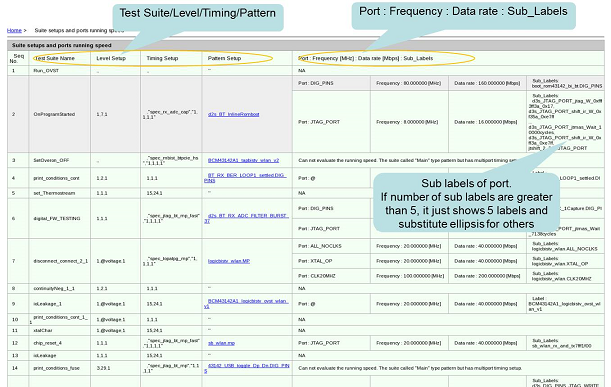

Suite setups and ports running speed reports
On the home page of the Test Program Browser report, click the hyperlink in the Suite setups and ports running speed row. The report that lists suite name, level setup, timing setup, pattern setup and ports running speed is displayed.

Functional changes
- Introduced in SmarTest 7.2.2